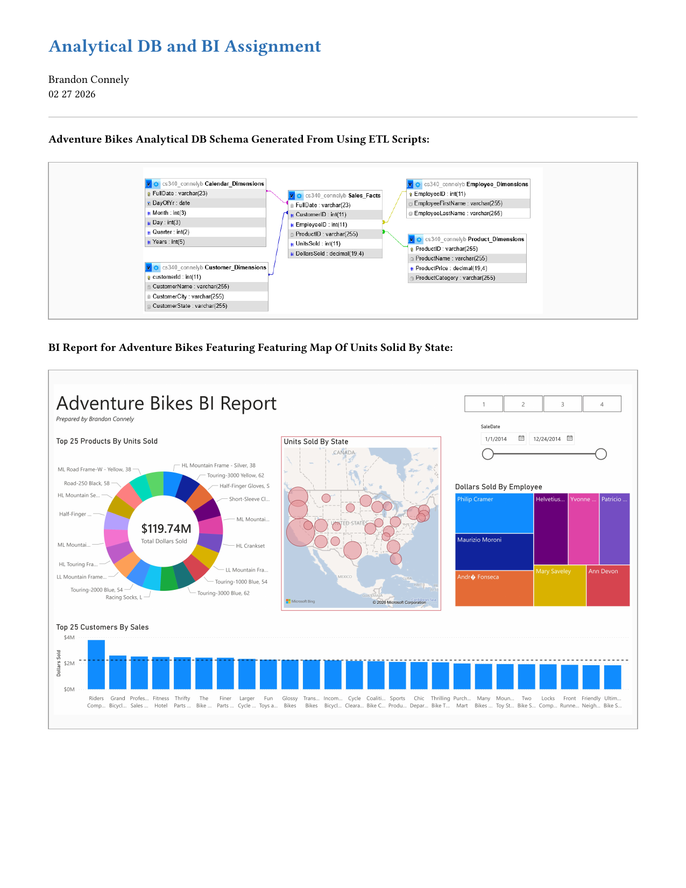

Analytical Database and Business Intelligence Project
In this assignment, we were asked to complete two activities.
Part 1: Building an Analytical Database with ETL
First, we created an analytical database from a transactional database using ETL scripts. I found this part especially insightful and beneficial for my personal goals. I can see myself potentially working as a Database Administrator or in a similar role, and this assignment helped show how real-world database work differs from the idealized examples we often use in class.
In practice, the idea of having a single perfectly designed database is often unrealistic. Instead, database professionals frequently need to adapt and restructure existing systems. For example, you may need to normalize a poorly designed database while carefully ensuring that the existing data is preserved. Being comfortable modifying and transforming databases in this way is an important skill for that type of role.
Part 2: Business Intelligence and Data Visualization
The second part of the assignment focused on business intelligence and data visualization. This was my first experience visualizing data outside of purely code-based tools such as matplotlib. I found this experience valuable because data is only useful if it can be presented in a clear and interpretable way, so learning how to communicate insights through visualization is an important skill. While I found the visualization process valuable, I did not like using Microsoft Power BI. If I were to work on a similar project in the future, I would likely choose a different tool such as Tableau.
